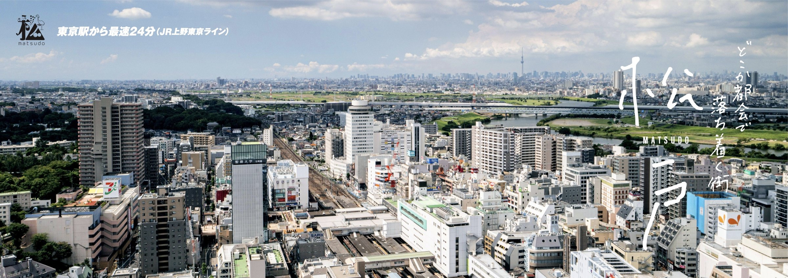

Scroll
Matsudo, Chiba, Japan

01About us
この街の住まいを、 この街の不動産会社が。

千葉県宅地建物取引業協会は、
松戸支部は、
Fig. 02 — 戸定邸 / Tojo-tei
02Service
住まいのことを、 まずはここから。
03Free consultation
ひらかれた、 三つの相談窓口。
売買・賃貸・契約・税金など、
-
毎週水13:00–17:00
不動産無料相談
松戸市役所 本館2階 相談コーナー
宅建協会松戸支部と
松戸市との 協定事業と して、 市民相談室で 当協会の 会員が ご相談を 承ります。 - Reservation
- 047-366-1162松戸市役所
広報 広聴課
相談日の1ヶ月前から 前日17時まで 受付(1日先着8組) - Note
- 受付は
16時まで。 祝日、 1月3日 及び1月第1週の 水曜日を 除く
-
毎月第四金15:00–17:00
不動産法律無料相談
宅建協会 松戸支部
事務局 不動産に
関する 法律の ご相談を、 当支部担当の 弁護士が 承ります。 - Place
- 松戸市上本郷3185JR常磐緩行線 北松戸駅 徒歩約8分 ／ 新京成線 上本郷駅 徒歩約10分
- Note
- 事務局の
閉局日等に あたる 場合は 第3金曜日
-
毎月第三金12:00–15:00
不動産税務 電話無料相談
お電話にて
本会の
顧問税理士が、 不動産の 税務に 関する ご相談に お電話で お応えします。 - Fee
- 無料
04Find a member
お住まいの地域から、 探す。
松戸支部の
05Town
暮らしの風景、 松戸。
-
01 本土寺Hondo-ji Temple
紫陽花の
名所と して 知られ、 「あじさい 寺」とも 呼ばれる 古刹。 -

02 矢切の渡しYagiri no Watashi
江戸川を
舟で 渡る、 昔ながらの 渡し舟。 -
03 戸定邸Tojo-tei
徳川昭武が
明治期に 建てた邸宅と 庭園。 -
04 21世紀の森と広場21st Century Forest Park
千駄堀の
自然を 生かした、 市民の 憩いの 都市公園。 -
Live, close to the city.
都心に
近く、
緑と歴史が
息づくまち。
06News
お知らせ
From the branch支部からのお知らせ
07Contact